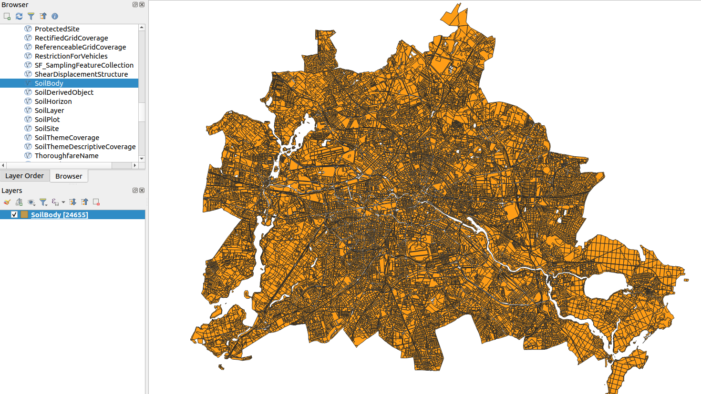

deegree
deegree is an open source java server implementation of WMS, WMTS, CSW, WCS, WFS, WPS.
This cookbook gives step-by-step instructions on the deegree WFS setup for serving rich GML data, in this case an INSPIRE soil data set.
There are two options in which deegree can be used to publish rich GML data.
- Using a relational database and a mapping configuration to generate the GML
- Using a
blobstorage to provide individual features without any processing
The second approach is easy to setup and efficient when users request full datasets. However, it may still be problematic if users use advanced filters to select subsets of the chosen dataset.
Get started with deegree
Start a deegree instance locally using the Docker Hub image:
Step 1: Pull the desired docker image
Latest minor version
docker pull deegree/deegree3-docker:3.5Specific version (example)
docker pull deegree/deegree3-docker:3.5.8Info: All available images of deegree version 3.5.x are built with Apache Tomcat 9.x and OpenJDK 11. Check the deegree Docker Hub project for details and other deegree versions available.
Step 2: Set up the docker network:
docker network
docker network create -d bridge inspiresoilnetworkInfo: A Docker network is a virtual network that allows containers to communicate with each other and with external networks.
Step 3: Set up the local deegree docker container
Simple configuration (recommended for beginners)
docker run --name deegree_inspire_soil --network="inspiresoilnetwork" -d -p 8080:8080 deegree/deegree3-dockeror with a specific version:
docker run --name deegree_inspire_soil --network="inspiresoilnetwork" -d -p 8080:8080 deegree/deegree3-docker:3.5.8Advanced configuration
docker run --name deegree_inspire_soil --network="inspiresoilnetwork" -v /path/to/.deegree:/root/.deegree -d -p 8080:8080 deegree/deegree3-docker:3.5.8Tip: Using the docker parameter
-v(volume), all prior created deegree workspaces that are stored in/path/to/.deegreecan be accessed.
After an intial startup time, the deegree web console can be accessed under http://localhost:8080/deegree-webservices.
The deegree documentation contains a detailed quick start on how to import and operate a sample workspace.
The deegree GML tools CLI
The generation of SQL DDL scripts, deegree SQLFeatureStore configuration files from GML application schemas and import of GML data in a deegree SQLFeatureStore is managed via command line interface (CLI) tools.
The usage instructions of each CLI tool can be printed via:
docker exec -w /opt deegree_inspire_soil java -jar deegree-tools-gml.jar SqlFeatureStoreConfigCreator -h or
docker exec -w /opt deegree_inspire_soil java -jar deegree-tools-gml.jar GmlLoader -hTip: Instead of the parameter
-h,-helpor-?can be used as well.
The GML tools CLIs are described in further detail in the deegree documentation.
Example workflow
The above mentioned GML tools must be executed in the following order:
- SqlFeatureStoreConfigCreator
- GmlLoader
The following example workflow is based on this INSPIRE soil dataset:
Description of the dataset (german-only):
Attention: The example workflow makes use of the
docker execcommand, which can only be performed on an already existing docker container. Therefore, the completion of the previous chapter “Get started with deegree” is necessary to proceed further.
Step 1: Using the deegree SqlFeatureStoreConfigCreator
In the following, the SqlFeatureStoreConfigCreator is used to create a SQL DDL statement that creates a database schema as well as a deegree SQLFeatureStore configuration of the INSPIRE soil schema.
docker exec -w /opt deegree_inspire_soil java -jar deegree-tools-gml.jar SqlFeatureStoreConfigCreator -format=all -idtype=uuid -mapping=relational -dialect=postgis -schemaUrl=https://inspire.ec.europa.eu/schemas/so/4.0/Soil.xsdIf run successfully, the SqlFeatureStoreConfigCreator will generate the SQL DDL statement as Soil.sql and the SQLFeatureStore configuration as Soil.xml.
Tip: The results reside in the directory
/optof the docker container and should be copied into the local filesystem in order to be accessed easily using following docker command:docker cp deegree_inspire_soil:/opt/Soil.xml /destination.
Step 2: Creating a database
To use the previously generated Soil.sql, a database needs to be created. For this example a docker container with a PostgreSQL image (version 16) and the PostGIS extension (version 3.4) is created:
docker run --name postgis_inspire_soil --network="inspiresoilnetwork" -d -p 5432:5432 -e POSTGRES_PASSWORD=postgres -e POSTGRES_USER=postgres -v /destination/Soil.sql:/ postgis/postgis:16-3.4Info: The SQL DDL file
Soil.sqlis mounted onto the container by using the previously mentioned docker run parameter-v. This way, the file does not have to be copied onto the container after its creation.
In the next step, the database is established and the SQL DDL statement loaded into it using psql:
docker exec -it postgis_inspire_soil psql -U postgres -c 'CREATE DATABASE inspire_soil;' -c '\c inspire_soil' -c 'CREATE EXTENSION postgis;' -f /Soil.sqlStep 3: Configuration of the deegree workspace
For beginners, the easiest way to configure deegree is via the web console at
- Create a deegree workspace
- In the web console, create a new workspace under
general > workspaces > Create a new workspace
- For this example the workspace is called
'inspire_soil'. After creation, the workspace should appear under:Available workspaces.
- Then start the created workspace.
- Create a SQL database connection
- Create a new SQL database connection under
connections > databases > Create new.
- Choose an identifier, for example
'inspire_soil_db'and select typeDataSource (preferred)with XML config examplePostgreSQL (minimal)and clickCreate new. - The URL in the XML template needs to be adjusted according to the previously created PostgreSQL docker container as well as the database
'inspire_soil'. The set URL should look like this"jdbc:postgresql://postgis_inspire_soil:5432/inspire_soil". The previously chosen password and username also need to be adjusted. Click the buttonsaveto save your changes to the XML template.
Info: Since both, the deegree and PostgreSQL docker container, are in the same network, you can use the name of the PostgreSQL docker container as hostname.
- Create a SQLFeatureStore
- Create a new SQLFeatureStore under
data stores > feature > Create new.
- Choose an identifier, for example
'inspire_soil_fs'and select typeSQLwith XML config exampleminimaland clickCreate new. - In the XML editor, delete the existing content (CTRL+A, DEL).
- Next, open the in step 1 created file
Soil.xmland select all of its content (CTRL+A, CTRL+C), then paste the content into the XML editor (CRTL+V). - The only change necessary is to use the individual identifier of the SQL database connection, which you set in step 2. For example
<JDBCConnId>inspire_soil_db</JDBCConnId>. Click the buttonsaveto save your changes to the XML template.
- In some cases, as in this example, the FIDMapping prefix of certain FeatureTypes needs to be adjusted manually.
- In this example, the following FIDMapping prefix changes need to be made to the
Soil.xmlfile to match those in the database schema (Soil.sql):- “OMPR_PROCESS_” to “Process_”
- “SO_DERIVEDSOILPROFILE_” to “DerivedSoilProfile_”
- “SO_SOILBODY_” to “SoilBody_”
- “SO_SOILLAYER_” to “SoilLayer_”
Info: Alternatively, you can also copy the
Soil.xmldirectly into the workspace with i.e.:docker cp Soil.xml deegree_inspire_soil:/root/.deegree/inspire_soil/datasources/feature/. Remember, that the above mentioned changes (identifier feature store and database connection) still need to be applied.
- Create a Web Feature Service (WFS)
- Create a new WFS under
web services > services > Create new.
- Choose an identifier, for example
'inspire_soil_wfs'and select service typeWFSwith XML config examplecomplexand clickCreate new. - Next, change the
FeatureStoreIdto the identifier set in step 3. For example<FeatureStoreId>inspire_soil_fs</FeatureStoreId>. Click the buttonsaveto save your changes to the XML template.
- Reload the deegree workspace
- Once the previous steps 1-4 are completed, reload your deegree workspace by clicking the button
[Reload]. The button is located at top of the web console interface, right next to your active workspace.- If your configuration is valid, there should be no red exclemation visible on the web console interface.
This concludes the basic configuration of the deegree workspace.
Step 4: Using the deegree GmlLoader
After downloading and extracting the dataset mentioned at the beginning of this example workflow, the file Soil.gml needs to be copied onto the previously created deegree docker container using the following docker command:
docker cp path/to/Soil.gml deegree_inspire_soil:/Lastly, the GmlLoader can be started using the following parameters:
docker exec -w /opt deegree_inspire_soil java -Xmx16g -jar deegree-tools-gml.jar GmlLoader -pathToFile=/Soil.gml -workspaceName=inspire_soil -sqlFeatureStoreId=inspire_soil_fs -disabledResources=https://inspire.ec.europa.eu/codelist/Info: Setting the Java parameter
-Xmx16g(value dependant on the resources provided) is highly advisable, to avoid an JavaOutOfMemoryError. Further information regarding the parameters of the GmlLoader can be found in the deegree documentation.
Attention: The deegree GmlLoader takes around 21 hours to run, since the dataset used in this example is quite large (854,2 MB).
After the GmlLoader has run successfully, open the capabilities of the WFS configured in step 3 configured WFS under
web services > services > inspire_soil_wfs > capabilities.
The capabilties are also directly accessible at the following address:
Lastly, QGIS or any other GIS can be connected the WFS resource. Multiple layers should be visible. Import the layer with the name SoilBody to the layer panel. The visualisation should be similar to the following screenshot:

Alternatively, you can prepare a GetFeature request to extract a sample of the data available through the configured WFS. For example:
Featured implementations
Some implementations of INSPIRE soil data services based on deegree:
Read more
deegree is maintained by the company lat-lon, among others
- Website: http://www.deegree.org/
- Documentation: https://download.deegree.org/documentation/current/html/
- Download: https://www.deegree.org/download/
- Docker: https://hub.docker.com/r/deegree/deegree3-docker/
- INSPIRE Data Specification on Soil: https://inspire.ec.europa.eu/Themes/127/2892
Contributions to the deegree open source project are always welcome!